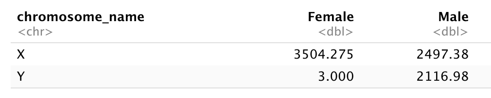

Chapter 5 Manipulating and analyzing data with dplyr
Learning Objectives
Describe the purpose of the
dplyrandtidyrpackages.Select certain columns in a data frame with the
dplyrfunctionselect.Select certain rows in a data frame according to filtering conditions with the
dplyrfunctionfilter.Link the output of one
dplyrfunction to the input of another function with the ‘pipe’ operator%>%.Add new columns to a data frame that are functions of existing columns with
mutate.Use the split-apply-combine concept for data analysis.
Use
summarize,group_by, andcountto split a data frame into groups of observations, apply summary statistics for each group, and then combine the results.Describe the concept of a wide and a long table format and for which purpose those formats are useful.
Reshape a data frame from long to wide format and back with the
pivot_wider()andpivot_longer()commands from thetidyrpackage.
5.1 Data Manipulation using dplyr and tidyr
Bracket subsetting is handy, but it can be cumbersome and difficult to
read, especially for complicated operations. Enter
dplyr. dplyr is a package for making tabular data
manipulation easier. It pairs nicely with tidyr which enables
you to swiftly convert between different data formats for plotting and
analysis.
Packages in R are basically sets of additional functions that let you
do more stuff. The functions we’ve been using so far, like str() or
data.frame(), come built into R; packages give you access to more of
them. Before you use a package for the first time you need to install
it on your machine, and then you should import it in every subsequent
R session when you need it. You should already have installed the
tidyverse package. This is an “umbrella-package” that installs
several packages useful for data analysis which work together well
such as tidyr, dplyr, ggplot2, tibble, etc.
The tidyverse package tries to address 3 common issues that
arise when doing data analysis with some of functions that come with
R:
- The results from a base R function sometimes depend on the type of data.
- Using R expressions in a non standard way, which can be confusing for new learners.
- Hidden arguments, having default operations that new learners are not aware of.
We have seen in our previous lesson that when building or importing a
data frame, the columns that contain characters (i.e., text) are
coerced (=converted) into the factor data type. We had to set
stringsAsFactors to FALSE to avoid this hidden argument to
convert our data type.
This time will use the tidyverse package to read the data and
avoid having to set stringsAsFactors to FALSE
To load the package type:
## load the tidyverse packages, incl. dplyr
library("tidyverse")The Data Transformation Cheat
Sheet
provides an overview of the dplyr grammar, offering more details and
functions that we will see in this chapter.
5.2 What are dplyr and tidyr?
The package dplyr provides easy tools for the most common data manipulation
tasks. It is built to work directly with data frames, with many common tasks
optimized by being written in a compiled language (C++). An additional feature is the
ability to work directly with data stored in an external database. The benefits of
doing this are that the data can be managed natively in a relational database,
queries can be conducted on that database, and only the results of the query are
returned.
This addresses a common problem with R in that all operations are conducted in-memory and thus the amount of data you can work with is limited by available memory. The database connections essentially remove that limitation in that you can connect to a database of many hundreds of GB, conduct queries on it directly, and pull back into R only what you need for analysis.
The package tidyr addresses the common problem of wanting to
reshape your data for plotting and use by different R
functions. Sometimes we want data sets where we have one row per
measurement. Sometimes we want a data frame where each measurement
type has its own column, and rows are instead more aggregated groups -
like plots or aquaria. Moving back and forth between these formats is
nontrivial, and tidyr gives you tools for this and more
sophisticated data manipulation.
To learn more about dplyr and tidyr after the workshop,
you may want to check out this handy data transformation with
dplyr
cheatsheet
and this one about
tidyr.
We’ll read in our data using the read_csv() function, from the
tidyverse package readr, instead of read.csv().
rna <- read_csv("data/rnaseq.csv")## Rows: 32428 Columns: 19## ── Column specification ────────────────────────────────────────────────────────────────────────────────────────────────────────────────────────────────────────────────────────────────────────────────────────────
## Delimiter: ","
## chr (14): gene, sample, organism, sex, infection, strain, tissue, product, e...
## dbl (5): expression, age, time, mouse, ENTREZID##
## ℹ Use `spec()` to retrieve the full column specification for this data.
## ℹ Specify the column types or set `show_col_types = FALSE` to quiet this message.## inspect the data
str(rna)
## preview the data
# View(rna)Notice that the class of the data is now tbl_df
This is referred to as a “tibble.” Tibbles tweak some of the behaviors of the data frame objects we introduced in the previous episode. The data structure is very similar to a data frame. For our purposes the only differences are that:
- In addition to displaying the data type of each column under its name, it only prints the first few rows of data and only as many columns as fit on one screen.
- Columns of class
characterare never converted into factors.
We’re going to learn some of the most common dplyr functions:
-
select(): subset columns -
filter(): subset rows on conditions -
mutate(): create new columns by using information from other columns -
group_by()andsummarize(): create summary statisitcs on grouped data -
arrange(): sort results -
count(): count discrete values
5.3 Selecting columns and filtering rows
To select columns of a data frame, use select(). The first argument
to this function is the data frame (rna), and the subsequent
arguments are the columns to keep.
select(rna, gene, sample, tissue, expression)## # A tibble: 32,428 × 4
## gene sample tissue expression
## <chr> <chr> <chr> <dbl>
## 1 Asl GSM2545336 Cerebellum 1170
## 2 Apod GSM2545336 Cerebellum 36194
## 3 Cyp2d22 GSM2545336 Cerebellum 4060
## 4 Klk6 GSM2545336 Cerebellum 287
## 5 Fcrls GSM2545336 Cerebellum 85
## 6 Slc2a4 GSM2545336 Cerebellum 782
## 7 Exd2 GSM2545336 Cerebellum 1619
## 8 Gjc2 GSM2545336 Cerebellum 288
## 9 Plp1 GSM2545336 Cerebellum 43217
## 10 Gnb4 GSM2545336 Cerebellum 1071
## # … with 32,418 more rowsTo select all columns except certain ones, put a “-” in front of the variable to exclude it.
select(rna, -organism, -strain)## # A tibble: 32,428 × 17
## gene sample expression age sex infection time tissue mouse ENTREZID
## <chr> <chr> <dbl> <dbl> <chr> <chr> <dbl> <chr> <dbl> <dbl>
## 1 Asl GSM2545336 1170 8 Female Influenz… 8 Cereb… 14 109900
## 2 Apod GSM2545336 36194 8 Female Influenz… 8 Cereb… 14 11815
## 3 Cyp2d22 GSM2545336 4060 8 Female Influenz… 8 Cereb… 14 56448
## 4 Klk6 GSM2545336 287 8 Female Influenz… 8 Cereb… 14 19144
## 5 Fcrls GSM2545336 85 8 Female Influenz… 8 Cereb… 14 80891
## 6 Slc2a4 GSM2545336 782 8 Female Influenz… 8 Cereb… 14 20528
## 7 Exd2 GSM2545336 1619 8 Female Influenz… 8 Cereb… 14 97827
## 8 Gjc2 GSM2545336 288 8 Female Influenz… 8 Cereb… 14 118454
## 9 Plp1 GSM2545336 43217 8 Female Influenz… 8 Cereb… 14 18823
## 10 Gnb4 GSM2545336 1071 8 Female Influenz… 8 Cereb… 14 14696
## # … with 32,418 more rows, and 7 more variables: product <chr>,
## # ensembl_gene_id <chr>, external_synonym <chr>, chromosome_name <chr>,
## # gene_biotype <chr>, phenotype_description <chr>,
## # hsapiens_homolog_associated_gene_name <chr>This will select all the variables in rna except organism
and strain.
To choose rows based on a specific criteria, use filter():
filter(rna, sex == "Male")## # A tibble: 14,740 × 19
## gene sample expression organism age sex infection strain time tissue
## <chr> <chr> <dbl> <chr> <dbl> <chr> <chr> <chr> <dbl> <chr>
## 1 Asl GSM254… 626 Mus mus… 8 Male Influenz… C57BL… 4 Cereb…
## 2 Apod GSM254… 13021 Mus mus… 8 Male Influenz… C57BL… 4 Cereb…
## 3 Cyp2d22 GSM254… 2171 Mus mus… 8 Male Influenz… C57BL… 4 Cereb…
## 4 Klk6 GSM254… 448 Mus mus… 8 Male Influenz… C57BL… 4 Cereb…
## 5 Fcrls GSM254… 180 Mus mus… 8 Male Influenz… C57BL… 4 Cereb…
## 6 Slc2a4 GSM254… 313 Mus mus… 8 Male Influenz… C57BL… 4 Cereb…
## 7 Exd2 GSM254… 2366 Mus mus… 8 Male Influenz… C57BL… 4 Cereb…
## 8 Gjc2 GSM254… 310 Mus mus… 8 Male Influenz… C57BL… 4 Cereb…
## 9 Plp1 GSM254… 53126 Mus mus… 8 Male Influenz… C57BL… 4 Cereb…
## 10 Gnb4 GSM254… 1355 Mus mus… 8 Male Influenz… C57BL… 4 Cereb…
## # … with 14,730 more rows, and 9 more variables: mouse <dbl>, ENTREZID <dbl>,
## # product <chr>, ensembl_gene_id <chr>, external_synonym <chr>,
## # chromosome_name <chr>, gene_biotype <chr>, phenotype_description <chr>,
## # hsapiens_homolog_associated_gene_name <chr>filter(rna, sex == "Male" & infection == "NonInfected")## # A tibble: 4,422 × 19
## gene sample expression organism age sex infection strain time tissue
## <chr> <chr> <dbl> <chr> <dbl> <chr> <chr> <chr> <dbl> <chr>
## 1 Asl GSM254… 535 Mus mus… 8 Male NonInfec… C57BL… 0 Cereb…
## 2 Apod GSM254… 13668 Mus mus… 8 Male NonInfec… C57BL… 0 Cereb…
## 3 Cyp2d22 GSM254… 2008 Mus mus… 8 Male NonInfec… C57BL… 0 Cereb…
## 4 Klk6 GSM254… 1101 Mus mus… 8 Male NonInfec… C57BL… 0 Cereb…
## 5 Fcrls GSM254… 375 Mus mus… 8 Male NonInfec… C57BL… 0 Cereb…
## 6 Slc2a4 GSM254… 249 Mus mus… 8 Male NonInfec… C57BL… 0 Cereb…
## 7 Exd2 GSM254… 3126 Mus mus… 8 Male NonInfec… C57BL… 0 Cereb…
## 8 Gjc2 GSM254… 791 Mus mus… 8 Male NonInfec… C57BL… 0 Cereb…
## 9 Plp1 GSM254… 98658 Mus mus… 8 Male NonInfec… C57BL… 0 Cereb…
## 10 Gnb4 GSM254… 2437 Mus mus… 8 Male NonInfec… C57BL… 0 Cereb…
## # … with 4,412 more rows, and 9 more variables: mouse <dbl>, ENTREZID <dbl>,
## # product <chr>, ensembl_gene_id <chr>, external_synonym <chr>,
## # chromosome_name <chr>, gene_biotype <chr>, phenotype_description <chr>,
## # hsapiens_homolog_associated_gene_name <chr>5.4 Pipes
What if you want to select and filter at the same time? There are three ways to do this: use intermediate steps, nested functions, or pipes.
With intermediate steps, you create a temporary data frame and use that as input to the next function, like this:
rna2 <- filter(rna, sex == "Male")
rna3 <- select(rna2, gene, sample, tissue, expression)
rna3## # A tibble: 14,740 × 4
## gene sample tissue expression
## <chr> <chr> <chr> <dbl>
## 1 Asl GSM2545340 Cerebellum 626
## 2 Apod GSM2545340 Cerebellum 13021
## 3 Cyp2d22 GSM2545340 Cerebellum 2171
## 4 Klk6 GSM2545340 Cerebellum 448
## 5 Fcrls GSM2545340 Cerebellum 180
## 6 Slc2a4 GSM2545340 Cerebellum 313
## 7 Exd2 GSM2545340 Cerebellum 2366
## 8 Gjc2 GSM2545340 Cerebellum 310
## 9 Plp1 GSM2545340 Cerebellum 53126
## 10 Gnb4 GSM2545340 Cerebellum 1355
## # … with 14,730 more rowsThis is readable, but can clutter up your workspace with lots of objects that you have to name individually. With multiple steps, that can be hard to keep track of.
You can also nest functions (i.e. one function inside of another), like this:
rna3 <- select(filter(rna, sex == "Male"), gene, sample, tissue, expression)
rna3## # A tibble: 14,740 × 4
## gene sample tissue expression
## <chr> <chr> <chr> <dbl>
## 1 Asl GSM2545340 Cerebellum 626
## 2 Apod GSM2545340 Cerebellum 13021
## 3 Cyp2d22 GSM2545340 Cerebellum 2171
## 4 Klk6 GSM2545340 Cerebellum 448
## 5 Fcrls GSM2545340 Cerebellum 180
## 6 Slc2a4 GSM2545340 Cerebellum 313
## 7 Exd2 GSM2545340 Cerebellum 2366
## 8 Gjc2 GSM2545340 Cerebellum 310
## 9 Plp1 GSM2545340 Cerebellum 53126
## 10 Gnb4 GSM2545340 Cerebellum 1355
## # … with 14,730 more rowsThis is handy, but can be difficult to read if too many functions are nested, as R evaluates the expression from the inside out (in this case, filtering, then selecting).
The last option, pipes, are a recent addition to R. Pipes let you take
the output of one function and send it directly to the next, which is useful
when you need to do many things to the same dataset. Pipes in R look like
%>% and are made available via the magrittr package, installed automatically
with dplyr. If you use RStudio, you can type the pipe with Ctrl
+ Shift + M if you have a PC or Cmd +
Shift + M if you have a Mac.
rna %>%
filter(sex == "Male") %>%
select(gene, sample, tissue, expression)## # A tibble: 14,740 × 4
## gene sample tissue expression
## <chr> <chr> <chr> <dbl>
## 1 Asl GSM2545340 Cerebellum 626
## 2 Apod GSM2545340 Cerebellum 13021
## 3 Cyp2d22 GSM2545340 Cerebellum 2171
## 4 Klk6 GSM2545340 Cerebellum 448
## 5 Fcrls GSM2545340 Cerebellum 180
## 6 Slc2a4 GSM2545340 Cerebellum 313
## 7 Exd2 GSM2545340 Cerebellum 2366
## 8 Gjc2 GSM2545340 Cerebellum 310
## 9 Plp1 GSM2545340 Cerebellum 53126
## 10 Gnb4 GSM2545340 Cerebellum 1355
## # … with 14,730 more rowsIn the above code, we use the pipe to send the rna dataset first through
filter() to keep rows where sex is Male, then through select()
to keep only the gene, sample, tissue, and expressioncolumns.
Since %>% takes the object on its left and passes it as the first argument
to the function on its right, we don’t need to explicitly include the data frame
as an argument to the filter() and select() functions any more.
Some may find it helpful to read the pipe like the word “then.” For instance,
in the above example, we took the data frame rna, then we filtered
for rows with sex == "Male", then we selected columns gene, sample,
tissue, and expression. The dplyr functions by themselves are somewhat
simple, but by combining them into linear workflows with the pipe, we can accomplish
more complex manipulations of data frames.
If we want to create a new object with this smaller version of the data, we can assign it a new name:
rna3 <- rna %>%
filter(sex == "Male") %>%
select(gene, sample, tissue, expression)
rna3## # A tibble: 14,740 × 4
## gene sample tissue expression
## <chr> <chr> <chr> <dbl>
## 1 Asl GSM2545340 Cerebellum 626
## 2 Apod GSM2545340 Cerebellum 13021
## 3 Cyp2d22 GSM2545340 Cerebellum 2171
## 4 Klk6 GSM2545340 Cerebellum 448
## 5 Fcrls GSM2545340 Cerebellum 180
## 6 Slc2a4 GSM2545340 Cerebellum 313
## 7 Exd2 GSM2545340 Cerebellum 2366
## 8 Gjc2 GSM2545340 Cerebellum 310
## 9 Plp1 GSM2545340 Cerebellum 53126
## 10 Gnb4 GSM2545340 Cerebellum 1355
## # … with 14,730 more rowsNote that the final data frame is the leftmost part of this expression.
► Question
Using pipes, subset the rna data to genes with an expression higher
than 50000 in male mice at time 0, and retain only the columns gene,
sample, time, expression and age
► Solution
5.5 Mutate
Frequently you’ll want to create new columns based on the values in existing
columns, for example to do unit conversions, or to find the ratio of values in two
columns. For this we’ll use mutate().
To create a new column of time in hours:
rna %>%
mutate(time_hours = time * 24) %>%
select(time, time_hours)## # A tibble: 32,428 × 2
## time time_hours
## <dbl> <dbl>
## 1 8 192
## 2 8 192
## 3 8 192
## 4 8 192
## 5 8 192
## 6 8 192
## 7 8 192
## 8 8 192
## 9 8 192
## 10 8 192
## # … with 32,418 more rowsYou can also create a second new column based on the first new column within the same call of mutate():
rna %>%
mutate(time_hours = time * 24, time_mn = time_hours * 60) %>%
select(time, time_hours, time_mn)## # A tibble: 32,428 × 3
## time time_hours time_mn
## <dbl> <dbl> <dbl>
## 1 8 192 11520
## 2 8 192 11520
## 3 8 192 11520
## 4 8 192 11520
## 5 8 192 11520
## 6 8 192 11520
## 7 8 192 11520
## 8 8 192 11520
## 9 8 192 11520
## 10 8 192 11520
## # … with 32,418 more rowsIf this runs off your screen and you just want to see the first few rows, you
can use a pipe to view the head() of the data. (Pipes work with non-dplyr
functions, too, as long as the dplyr or magrittr package is loaded).
rna %>%
mutate(time_hours = time * 24, time_mn = time_hours * 60) %>%
select(time, time_hours, time_mn) %>%
head()## # A tibble: 6 × 3
## time time_hours time_mn
## <dbl> <dbl> <dbl>
## 1 8 192 11520
## 2 8 192 11520
## 3 8 192 11520
## 4 8 192 11520
## 5 8 192 11520
## 6 8 192 11520Let’s imagine we are interested in the human homologs of the mouse
genes analysed in this dataset. This information can be found in the
last column of the rna tibble, named hsapiens_homolog_associated_gene_name.
rna %>%
select(gene, hsapiens_homolog_associated_gene_name)## # A tibble: 32,428 × 2
## gene hsapiens_homolog_associated_gene_name
## <chr> <chr>
## 1 Asl ASL
## 2 Apod APOD
## 3 Cyp2d22 CYP2D6
## 4 Klk6 KLK6
## 5 Fcrls FCRL4
## 6 Slc2a4 SLC2A4
## 7 Exd2 EXD2
## 8 Gjc2 GJC2
## 9 Plp1 PLP1
## 10 Gnb4 GNB4
## # … with 32,418 more rowsSome mouse gene have no human homologs. These can be retrieved using a filter()
in the chain, and the is.na() function that determines whether something is an NA.
rna %>%
select(gene, hsapiens_homolog_associated_gene_name) %>%
filter(is.na(hsapiens_homolog_associated_gene_name))## # A tibble: 4,774 × 2
## gene hsapiens_homolog_associated_gene_name
## <chr> <chr>
## 1 Prodh <NA>
## 2 Icosl <NA>
## 3 Tssk5 <NA>
## 4 Vmn2r1 <NA>
## 5 Gm10654 <NA>
## 6 Hexa <NA>
## 7 Sult1a1 <NA>
## 8 Gm6277 <NA>
## 9 Amt <NA>
## 10 Tmem198b <NA>
## # … with 4,764 more rowsIf we want to keep only mouse gene that have a human homolog, we can
insert a ! symbol that negates the result, so we’re asking for
every row where hsapiens_homolog_associated_gene_name is not an
NA.
The first few rows of the output are full of NAs, so if we wanted to remove
those we could insert a filter() in the chain:
rna %>%
select(gene, hsapiens_homolog_associated_gene_name) %>%
filter(!is.na(hsapiens_homolog_associated_gene_name))## # A tibble: 27,654 × 2
## gene hsapiens_homolog_associated_gene_name
## <chr> <chr>
## 1 Asl ASL
## 2 Apod APOD
## 3 Cyp2d22 CYP2D6
## 4 Klk6 KLK6
## 5 Fcrls FCRL4
## 6 Slc2a4 SLC2A4
## 7 Exd2 EXD2
## 8 Gjc2 GJC2
## 9 Plp1 PLP1
## 10 Gnb4 GNB4
## # … with 27,644 more rows► Question
Create a new data frame from the rna
data that meets the following criteria: contains only the gene,
chromosome_name, phenotype_description, sample, and expression
columns and a new column giving the log expression the gene. This
data frame must only contain gene located on autosomes and associated
with a phenotype_description.
Hint: think about how the commands should be ordered to produce this data frame!
► Solution
5.6 Split-apply-combine data analysis
Many data analysis tasks can be approached using the
split-apply-combine paradigm: split the data into groups, apply some
analysis to each group, and then combine the results. dplyr
makes this very easy through the use of the group_by() function.
rna %>%
group_by(gene)## # A tibble: 32,428 × 19
## # Groups: gene [1,474]
## gene sample expression organism age sex infection strain time tissue
## <chr> <chr> <dbl> <chr> <dbl> <chr> <chr> <chr> <dbl> <chr>
## 1 Asl GSM254… 1170 Mus mus… 8 Fema… Influenz… C57BL… 8 Cereb…
## 2 Apod GSM254… 36194 Mus mus… 8 Fema… Influenz… C57BL… 8 Cereb…
## 3 Cyp2d22 GSM254… 4060 Mus mus… 8 Fema… Influenz… C57BL… 8 Cereb…
## 4 Klk6 GSM254… 287 Mus mus… 8 Fema… Influenz… C57BL… 8 Cereb…
## 5 Fcrls GSM254… 85 Mus mus… 8 Fema… Influenz… C57BL… 8 Cereb…
## 6 Slc2a4 GSM254… 782 Mus mus… 8 Fema… Influenz… C57BL… 8 Cereb…
## 7 Exd2 GSM254… 1619 Mus mus… 8 Fema… Influenz… C57BL… 8 Cereb…
## 8 Gjc2 GSM254… 288 Mus mus… 8 Fema… Influenz… C57BL… 8 Cereb…
## 9 Plp1 GSM254… 43217 Mus mus… 8 Fema… Influenz… C57BL… 8 Cereb…
## 10 Gnb4 GSM254… 1071 Mus mus… 8 Fema… Influenz… C57BL… 8 Cereb…
## # … with 32,418 more rows, and 9 more variables: mouse <dbl>, ENTREZID <dbl>,
## # product <chr>, ensembl_gene_id <chr>, external_synonym <chr>,
## # chromosome_name <chr>, gene_biotype <chr>, phenotype_description <chr>,
## # hsapiens_homolog_associated_gene_name <chr>The group_by() function doesn’t perform any data processing, it
groups the data into subsets: in the example above, our initial
tibble of 32428 observations is split into
1474 groups based on the gene variable.
Once the data have been combined, subsequent operations will be applied on each group independently.
5.6.1 The summarize() function
group_by() is often used together with summarize(), which
collapses each group into a single-row summary of that group.
group_by() takes as arguments the column names that contain the
categorical variables for which you want to calculate the summary
statistics. So to compute the mean expression by gene:
rna %>%
group_by(gene) %>%
summarize(mean_expression = mean(expression))## # A tibble: 1,474 × 2
## gene mean_expression
## <chr> <dbl>
## 1 Aamp 4751.
## 2 Abca12 4.55
## 3 Abcc8 2498.
## 4 Abhd14a 525.
## 5 Abi2 4909.
## 6 Abi3bp 1002.
## 7 Abl2 2124.
## 8 Acadl 2053.
## 9 Acap3 3536.
## 10 Acbd4 1431.
## # … with 1,464 more rowsYou may also have noticed that the output from these calls doesn’t run off the
screen anymore. It’s one of the advantages of tbl_df over data frame.
You can also group by multiple columns:
rna %>%
group_by(gene, infection, time) %>%
summarize(mean_expression = mean(expression))## `summarise()` has grouped output by 'gene', 'infection'. You can override using the `.groups` argument.## # A tibble: 4,422 × 4
## # Groups: gene, infection [2,948]
## gene infection time mean_expression
## <chr> <chr> <dbl> <dbl>
## 1 Aamp InfluenzaA 4 4870
## 2 Aamp InfluenzaA 8 4763.
## 3 Aamp NonInfected 0 4603.
## 4 Abca12 InfluenzaA 4 4.25
## 5 Abca12 InfluenzaA 8 4.14
## 6 Abca12 NonInfected 0 5.29
## 7 Abcc8 InfluenzaA 4 2609.
## 8 Abcc8 InfluenzaA 8 2292.
## 9 Abcc8 NonInfected 0 2576.
## 10 Abhd14a InfluenzaA 4 547.
## # … with 4,412 more rowsHere, again, the output from these calls doesn’t run off the screen
anymore. If you want to display more data, you can use the print() function
at the end of your chain with the argument n specifying the number of rows to
display:
rna %>%
group_by(gene, infection, time) %>%
summarize(mean_expression = mean(expression)) %>%
print(n = 15)## `summarise()` has grouped output by 'gene', 'infection'. You can override using the `.groups` argument.## # A tibble: 4,422 × 4
## # Groups: gene, infection [2,948]
## gene infection time mean_expression
## <chr> <chr> <dbl> <dbl>
## 1 Aamp InfluenzaA 4 4870
## 2 Aamp InfluenzaA 8 4763.
## 3 Aamp NonInfected 0 4603.
## 4 Abca12 InfluenzaA 4 4.25
## 5 Abca12 InfluenzaA 8 4.14
## 6 Abca12 NonInfected 0 5.29
## 7 Abcc8 InfluenzaA 4 2609.
## 8 Abcc8 InfluenzaA 8 2292.
## 9 Abcc8 NonInfected 0 2576.
## 10 Abhd14a InfluenzaA 4 547.
## 11 Abhd14a InfluenzaA 8 432.
## 12 Abhd14a NonInfected 0 591.
## 13 Abi2 InfluenzaA 4 4903.
## 14 Abi2 InfluenzaA 8 4945.
## 15 Abi2 NonInfected 0 4881.
## # … with 4,407 more rowsOnce the data is grouped, you can also summarize multiple variables at the same
time (and not necessarily on the same variable). For instance, we could add
columns indicating the median expression by gene and by condition:
rna %>%
group_by(gene, infection, time) %>%
summarize(mean_expression = mean(expression),
median_expression = median(expression))## `summarise()` has grouped output by 'gene', 'infection'. You can override using the `.groups` argument.## # A tibble: 4,422 × 5
## # Groups: gene, infection [2,948]
## gene infection time mean_expression median_expression
## <chr> <chr> <dbl> <dbl> <dbl>
## 1 Aamp InfluenzaA 4 4870 4708
## 2 Aamp InfluenzaA 8 4763. 4813
## 3 Aamp NonInfected 0 4603. 4717
## 4 Abca12 InfluenzaA 4 4.25 4.5
## 5 Abca12 InfluenzaA 8 4.14 4
## 6 Abca12 NonInfected 0 5.29 5
## 7 Abcc8 InfluenzaA 4 2609. 2424.
## 8 Abcc8 InfluenzaA 8 2292. 2224
## 9 Abcc8 NonInfected 0 2576. 2578
## 10 Abhd14a InfluenzaA 4 547. 523
## # … with 4,412 more rowsIt is sometimes useful to rearrange the result of a query to inspect the values.
For instance, we can sort on mean_expression to put the genes lowly expressed first:
rna %>%
group_by(gene, infection, time) %>%
summarize(mean_expression = mean(expression),
median_expression = median(expression)) %>%
arrange(mean_expression)## `summarise()` has grouped output by 'gene', 'infection'. You can override using the `.groups` argument.## # A tibble: 4,422 × 5
## # Groups: gene, infection [2,948]
## gene infection time mean_expression median_expression
## <chr> <chr> <dbl> <dbl> <dbl>
## 1 Gm5415 InfluenzaA 4 0.375 0
## 2 Selp NonInfected 0 0.429 0
## 3 Ascl5 NonInfected 0 0.571 1
## 4 Gm28178 NonInfected 0 0.571 1
## 5 Il18r1 NonInfected 0 0.571 0
## 6 Pdcd1 InfluenzaA 8 0.571 0
## 7 Rln3 NonInfected 0 0.571 0
## 8 Gm19637 InfluenzaA 4 0.625 0.5
## 9 Gm6177 InfluenzaA 4 0.625 1
## 10 Gm7241 InfluenzaA 4 0.625 0.5
## # … with 4,412 more rowsTo sort in descending order, we need to add the desc() function:
rna %>%
group_by(gene, infection, time) %>%
summarize(mean_expression = mean(expression),
median_expression = median(expression)) %>%
arrange(desc(mean_expression))## `summarise()` has grouped output by 'gene', 'infection'. You can override using the `.groups` argument.## # A tibble: 4,422 × 5
## # Groups: gene, infection [2,948]
## gene infection time mean_expression median_expression
## <chr> <chr> <dbl> <dbl> <dbl>
## 1 Plp1 NonInfected 0 91103. 96534
## 2 Glul InfluenzaA 8 73948. 71706
## 3 Plp1 InfluenzaA 4 67198. 63840
## 4 Atp1b1 InfluenzaA 4 60364. 56546.
## 5 Atp1b1 InfluenzaA 8 59229 61672
## 6 Atp1b1 NonInfected 0 57351. 59094
## 7 Sparc InfluenzaA 8 56106. 57409
## 8 Glul InfluenzaA 4 55358. 52836.
## 9 Glul NonInfected 0 48123. 49099
## 10 Nrep NonInfected 0 40060. 37493
## # … with 4,412 more rows5.6.2 Counting
When working with data, we often want to know the number of observations found
for each factor or combination of factors. For this task, dplyr provides
count(). For example, if we wanted to count the number of rows of data for
each infected and non infected, we would do:
rna %>%
count(infection)## # A tibble: 2 × 2
## infection n
## <chr> <int>
## 1 InfluenzaA 22110
## 2 NonInfected 10318The count() function is shorthand for something we’ve already seen: grouping by a variable, and summarizing it by counting the number of observations in that group. In other words, rna %>% count() is equivalent to:
rna %>%
group_by(infection) %>%
summarise(count = n())## # A tibble: 2 × 2
## infection count
## <chr> <int>
## 1 InfluenzaA 22110
## 2 NonInfected 10318For convenience, count() provides the sort argument:
rna %>%
count(infection, sort = TRUE)## # A tibble: 2 × 2
## infection n
## <chr> <int>
## 1 InfluenzaA 22110
## 2 NonInfected 10318Previous example shows the use of count() to count the number of rows/observations
for one factor (i.e., infection).
If we wanted to count combination of factors, such as infection and time,
we would specify the first and the second factor as the arguments of count():
rna %>%
count(infection, time)## # A tibble: 3 × 3
## infection time n
## <chr> <dbl> <int>
## 1 InfluenzaA 4 11792
## 2 InfluenzaA 8 10318
## 3 NonInfected 0 10318With the above code, we can proceed with arrange() to sort the table
according to a number of criteria so that we have a better comparison.
For instance, we might want to arrange the table above by time:
rna %>%
count(infection, time) %>%
arrange(time)## # A tibble: 3 × 3
## infection time n
## <chr> <dbl> <int>
## 1 NonInfected 0 10318
## 2 InfluenzaA 4 11792
## 3 InfluenzaA 8 10318or by counts:
rna %>%
count(infection, time) %>%
arrange(n)## # A tibble: 3 × 3
## infection time n
## <chr> <dbl> <int>
## 1 InfluenzaA 8 10318
## 2 NonInfected 0 10318
## 3 InfluenzaA 4 11792► Question
How many genes were analysed in each sample?
Use
group_by()andsummarize()to evaluate the sequencing depth (the sum of all counts) in each sample. Which sample has the highest sequencing depth?Calculate the mean expression level of gene “Dok3” by timepoints.
Pick one sample and evaluate the number of genes by biotype
Identify genes associated with “abnormal DNA methylation” phenotype description, and calculate their mean expression (in log) at time 0, time 4 and time 8.
► Solution
In the spreadsheet lesson (chapter 1), we discussed how to structure our data leading to the four rules defining a tidy dataset:
5.7 Reshaping data
In rna, the rows contain expression values (the unit) that are
associated with a combination of 2 other variables: gene and sample.
All the other columns correspond to variables describing either
the sample (age, sex, organism…) or the gene (gene_biotype, ENTREZ_ID, product…).
The variables that don’t change genes or samples will have the same value in all the rows.
This structure is called a long-format, as one column contains all the values,
and other column(s) list(s) the context of the value.
In certain cases, the long-format is not really “human-readable,” and another format,
a wide-format is preferred, as a more compact way of representing the data.
This is typically the case with gene expression values that scientists are used to
look as matrices, were rows represent genes and columns represent samples.
To convert the gene expression values from rna into a wide-format,
we need to create a new table where each row (the units) is composed
of expression values associated with each gene.
In practical terms this means the values of the sample column in rna would
become the names of column variables, and the cells would contain the expression
values measured on each gene.
The key point here is that we are still following a tidy data structure, but we have reshaped the data according to the observations of interest: expression levels per gene instead of recording them per gene and per sample.
With this new table, it would become therefore straightforward to explore the relationship between the gene expression levels within, and between, the samples.
The opposite transformation would be to transform column names into values of a new variable.
We can do both these of transformations with two tidyr functions,
pivot_longer() and pivot_wider() (see
here for
details).
5.7.1 Pivoting the data into a wider format
Let’s first select the 3 first columns of rna and use pivot_wider()
to transform data in a wide-format.
rna_exp <- rna %>%
select(gene, sample, expression)
rna_exp## # A tibble: 32,428 × 3
## gene sample expression
## <chr> <chr> <dbl>
## 1 Asl GSM2545336 1170
## 2 Apod GSM2545336 36194
## 3 Cyp2d22 GSM2545336 4060
## 4 Klk6 GSM2545336 287
## 5 Fcrls GSM2545336 85
## 6 Slc2a4 GSM2545336 782
## 7 Exd2 GSM2545336 1619
## 8 Gjc2 GSM2545336 288
## 9 Plp1 GSM2545336 43217
## 10 Gnb4 GSM2545336 1071
## # … with 32,418 more rowspivot_wider takes three main arguments:
- the data to be transformed;
- the
names_fromcolumn name whose values will become new column names; - the
values_fromcolumn name whose values will fill the new columns.

Note also the values_fill argument which, if set, fills in missing
values with the value provided.
Using pivot_wider(), using new columns from the sample variable and
values from expression, this becomes 1474 gene expression measurements of 22
variables, one row for each gene, one column for each sample. We again use pipes:
rna_wide <- rna_exp %>%
pivot_wider(names_from = sample,
values_from = expression)
rna_wide## # A tibble: 1,474 × 23
## gene GSM2545336 GSM2545337 GSM2545338 GSM2545339 GSM2545340 GSM2545341
## <chr> <dbl> <dbl> <dbl> <dbl> <dbl> <dbl>
## 1 Asl 1170 361 400 586 626 988
## 2 Apod 36194 10347 9173 10620 13021 29594
## 3 Cyp2d22 4060 1616 1603 1901 2171 3349
## 4 Klk6 287 629 641 578 448 195
## 5 Fcrls 85 233 244 237 180 38
## 6 Slc2a4 782 231 248 265 313 786
## 7 Exd2 1619 2288 2235 2513 2366 1359
## 8 Gjc2 288 595 568 551 310 146
## 9 Plp1 43217 101241 96534 58354 53126 27173
## 10 Gnb4 1071 1791 1867 1430 1355 798
## # … with 1,464 more rows, and 16 more variables: GSM2545342 <dbl>,
## # GSM2545343 <dbl>, GSM2545344 <dbl>, GSM2545345 <dbl>, GSM2545346 <dbl>,
## # GSM2545347 <dbl>, GSM2545348 <dbl>, GSM2545349 <dbl>, GSM2545350 <dbl>,
## # GSM2545351 <dbl>, GSM2545352 <dbl>, GSM2545353 <dbl>, GSM2545354 <dbl>,
## # GSM2545362 <dbl>, GSM2545363 <dbl>, GSM2545380 <dbl>
We can now easily plot the comparisons between the gene expression levels in different samples.
Note that the pivot_wider() function comes with an optional values_fill argument
that can be usefull when dealing with missing values.
Let’s imagine that for some reason, we had some missing expression values for some
genes in certain samples. In the following fictive example, the gene Cyp2d22 has only
one expression value, in GSM2545338 sample.
rna_with_missing_values## # A tibble: 7 × 3
## gene sample expression
## <chr> <chr> <dbl>
## 1 Asl GSM2545336 1170
## 2 Apod GSM2545336 36194
## 3 Asl GSM2545337 361
## 4 Apod GSM2545337 10347
## 5 Asl GSM2545338 400
## 6 Apod GSM2545338 9173
## 7 Cyp2d22 GSM2545338 1603By default, the pivot_wider() function will add NA for missing values.
rna_with_missing_values %>%
pivot_wider(names_from = sample,
values_from = expression)## # A tibble: 3 × 4
## gene GSM2545336 GSM2545337 GSM2545338
## <chr> <dbl> <dbl> <dbl>
## 1 Asl 1170 361 400
## 2 Apod 36194 10347 9173
## 3 Cyp2d22 NA NA 1603But in some cases, we may wish to fill in the missing values by setting values_fill
to a specific value.
rna_with_missing_values %>%
pivot_wider(names_from = sample,
values_from = expression,
values_fill = 0)## # A tibble: 3 × 4
## gene GSM2545336 GSM2545337 GSM2545338
## <chr> <dbl> <dbl> <dbl>
## 1 Asl 1170 361 400
## 2 Apod 36194 10347 9173
## 3 Cyp2d22 0 0 16035.7.2 Pivoting data into a longer format
The opposing situation could occur if we had been provided with data
in the form of rna_wide, where the sample IDs are column
names, but we wish to treat them as values of a sample variable
instead.
In this situation we are using the column names and turning them into a pair of new variables. One variable represents the column names as values, and the other variable contains the values previously associated with the column names.
pivot_longer() takes four main arguments:
- the data to be transformed;
- the new
names_tocolumn we wish to create and populate with the current column names; - the new
values_tocolumn we wish to create and populate with current values; - the names of the columns to be used to populate the
names_toandvalues_tovariables (or to drop).
To recreate rna_long from rna_long we would create a key
called sample and value called expression and use all columns
except gene for the key variable. Here we drop gene column
with a minus sign.
Notice how the new variable names are to be quoted here.
rna_long <- rna_wide %>%
pivot_longer(names_to = "sample",
values_to = "expression",
-gene)
rna_long## # A tibble: 32,428 × 3
## gene sample expression
## <chr> <chr> <dbl>
## 1 Asl GSM2545336 1170
## 2 Asl GSM2545337 361
## 3 Asl GSM2545338 400
## 4 Asl GSM2545339 586
## 5 Asl GSM2545340 626
## 6 Asl GSM2545341 988
## 7 Asl GSM2545342 836
## 8 Asl GSM2545343 535
## 9 Asl GSM2545344 586
## 10 Asl GSM2545345 597
## # … with 32,418 more rows
Note that if we had missing values in the wide-format, the NA would be
included in the new wide format. Pivoting to wider and longer formats can
be a useful way to balance out a dataset so every replicate has the same composition.
wide_with_NA <- rna_with_missing_values %>%
pivot_wider(names_from = sample,
values_from = expression)
wide_with_NA## # A tibble: 3 × 4
## gene GSM2545336 GSM2545337 GSM2545338
## <chr> <dbl> <dbl> <dbl>
## 1 Asl 1170 361 400
## 2 Apod 36194 10347 9173
## 3 Cyp2d22 NA NA 1603wide_with_NA %>%
pivot_longer(names_to = "sample",
values_to = "expression",
-gene)## # A tibble: 9 × 3
## gene sample expression
## <chr> <chr> <dbl>
## 1 Asl GSM2545336 1170
## 2 Asl GSM2545337 361
## 3 Asl GSM2545338 400
## 4 Apod GSM2545336 36194
## 5 Apod GSM2545337 10347
## 6 Apod GSM2545338 9173
## 7 Cyp2d22 GSM2545336 NA
## 8 Cyp2d22 GSM2545337 NA
## 9 Cyp2d22 GSM2545338 1603We could also have used a specification for what columns to
include. This can be useful if you have a large number of identifying
columns, and it’s easier to specify what to gather than what to leave
alone. Here the starts_with() function can help to retrieve sample
names without having to list them all!
Another possibility would be to use the : operator!
rna_wide %>%
pivot_longer(names_to = "sample",
values_to = "expression",
cols = starts_with("GSM"))## # A tibble: 32,428 × 3
## gene sample expression
## <chr> <chr> <dbl>
## 1 Asl GSM2545336 1170
## 2 Asl GSM2545337 361
## 3 Asl GSM2545338 400
## 4 Asl GSM2545339 586
## 5 Asl GSM2545340 626
## 6 Asl GSM2545341 988
## 7 Asl GSM2545342 836
## 8 Asl GSM2545343 535
## 9 Asl GSM2545344 586
## 10 Asl GSM2545345 597
## # … with 32,418 more rowsrna_wide %>%
pivot_longer(names_to = "sample",
values_to = "expression",
GSM2545336:GSM2545380)## # A tibble: 32,428 × 3
## gene sample expression
## <chr> <chr> <dbl>
## 1 Asl GSM2545336 1170
## 2 Asl GSM2545337 361
## 3 Asl GSM2545338 400
## 4 Asl GSM2545339 586
## 5 Asl GSM2545340 626
## 6 Asl GSM2545341 988
## 7 Asl GSM2545342 836
## 8 Asl GSM2545343 535
## 9 Asl GSM2545344 586
## 10 Asl GSM2545345 597
## # … with 32,418 more rows► Question
Subset genes located on X and Y chromosomes from the rna data frame and
spread the data frame with sex as columns, chromosome_name as
rows, and the mean expression of genes located in each chromosome as the values.

You will need to summarize before reshaping!
► Solution
► Question
Now take that data frame and transform it with pivot_longer() so
each row is a unique chromosome_name by gender combination.
► Solution
► Question
Use the rna dataset to create an expression matrix were each row represents
the mean expression levels of genes and columns represent the different timepoints.
► Solution
► Question
Use the previous data frame containing mean expression levels per timepoint and create a new column containing fold-changes between timepoint 8 and timepoint 0, and fold-changes between timepoint 8 and timepoint 4. Convert this table in a long-format table gathering the foldchanges calculated.
► Solution
5.8 Exporting data
Now that you have learned how to use dplyr to extract information from
or summarize your raw data, you may want to export these new data sets to share
them with your collaborators or for archival.
Similar to the read_csv() function used for reading CSV files into R, there is
a write_csv() function that generates CSV files from data frames.
Before using write_csv(), we are going to create a new folder, data_output,
in our working directory that will store this generated dataset. We don’t want
to write generated datasets in the same directory as our raw data. It’s good
practice to keep them separate. The data folder should only contain the raw,
unaltered data, and should be left alone to make sure we don’t delete or modify
it. In contrast, our script will generate the contents of the data_output
directory, so even if the files it contains are deleted, we can always
re-generate them.
In preparation for our next lesson on plotting, we are going to prepare a table representing for each gene, the fold-changes (in log values) between timepoint 8 and timepoint 0, and the fold-changes between timepoint 8 and timepoint 0.
rna_FC <- rna %>%
mutate(expression_log = log(expression)) %>%
group_by(gene, time) %>%
summarize(mean_exp = mean(expression_log)) %>%
pivot_wider(names_from = time,
values_from = mean_exp) %>%
mutate(time_8_vs_0 = `8` - `0`, time_4_vs_0 = `4` - `0`) %>%
select(gene, time_8_vs_0, time_4_vs_0)## `summarise()` has grouped output by 'gene'. You can override using the `.groups` argument.rna_FC## # A tibble: 1,474 × 3
## # Groups: gene [1,474]
## gene time_8_vs_0 time_4_vs_0
## <chr> <dbl> <dbl>
## 1 Aamp 0.0271 0.0522
## 2 Abca12 -0.116 -0.114
## 3 Abcc8 -0.114 0.0163
## 4 Abhd14a -0.309 -0.0800
## 5 Abi2 0.0110 -0.000894
## 6 Abi3bp -0.432 -0.107
## 7 Abl2 -0.0188 -0.0550
## 8 Acadl -0.0353 0.0182
## 9 Acap3 -0.0869 -0.0900
## 10 Acbd4 0.320 0.149
## # … with 1,464 more rowsWe can save the table as a CSV file in our data_output
folder.
write_csv(rna_FC, file = "data_output/rna_FC.csv")5.9 Additional exercises
► Question
We are going to re-analyse beer consumption in 48 individuals using
dplyr. The data are available in the rWSBIM1207 package. The data
illustrated the fictive beer consumption in litres per year at
different age according to gender and employment.
- Load the
rWSBIM1207package. If the package isn’t installed of its version is older than 0.1.1, install it from theUCLouvain-CBIO/rWSBIM1207' GitHub repository using thedevtools::install_github` function. - Directly load the data by typing
data(beers)Remove observations with missing values.
Using the
Year,MonthandYearcolumns, create a new columnDateusingdplyr::mutateandlubridate::ymd. What is the class ofDate?Create a new table, containing observations for women older than 35 years old, employed, and select all columns except Day, Month and Year, and order in descending value of consumption of beers.
Export the new table to a
csvfile.
Beer consumption analysis:
- Does employment status have an impact on beer consumption?
- Do men drink more than women?
- Does employment status have an influence on beer consumption according to gender?
- Do men drink more than women according to age and employment status?
As we can see from the last exercise, it become difficult to read and interpret multiple results. In the next chapter, we will see how to complement such analysis questions with visualisations such as the following one, that clearly highlight important patterns in our data.
Figure 5.1: Visualisation of beer consumption, highlighting different patterns of beer consumption in employed and unemployed males and females.

► Question
The Cancer Genome Atlas (TCGA) is a large scale effort that has collected high throughput biology data from hundreds of patients samples. In this exercise, we are going to analyse the clinical variables recorded for a subset of the patients.
Load the
rWSBIM1207package. If the package isn’t installed of its version is older than 0.1.1, install it from theUCLouvain-CBIO/rWSBIM1207' GitHub repository using thedevtools::install_github` function.Using the
clinical1.csv()function fromrWSBIM1207, find the path theclinical1.csvfile and read it to produce adata.framenamedclinical.Familiarise yourself with the data.
Create a smaller data frame called
clinical_minicontaining only the columns corresponding topatientID,gender,age_at_diagnosis,smoking_history,number_pack_years_smoked,year_of_tobacco_smoking_onset, andstopped_smoking_year.Calculate the number of males and females in the cohort.
Create a new variable
years_at_diagnosiscorresponding to the age at diagnosis converted from days into years.Calculate the mean and median age at diagnosis (in years). Pay attention to missing values!
Calculate the mean and median age at diagnosis for males and females.
How many patient were diagnosed before 50 years?
Compare the mean age at diagnosis between current smoker and lifelong non-smoker.
Select patients who stopped smoking more than 15 years ago and calculate the number of smoking years for these cases. Display only cases for which you were able to calculate the data.
How many of them smoked less than 5 years?
Try to recreate the following table, reporting the number of smokers and lifelong-non smoker between males and females. Note: the layout can be different.
| gender | current smoker | lifelong non-smoker |
|---|---|---|
| female | 51 | 55 |
| male | 69 | 20 |
► Question
Using the interroA.csv() function from the rWSBIM1207 package to
get the path to the spreadsheet file, read the data into R using the
read_csv function. This data is in the wide format, with the results
of each test stored as a separate column.
Using the appropriate pivot function, convert the data into a long
table with a column interro informing which test that line refers to
and a column result with the student’s mark.
Page built: 2021-09-30 using R version 4.1.0 (2021-05-18)